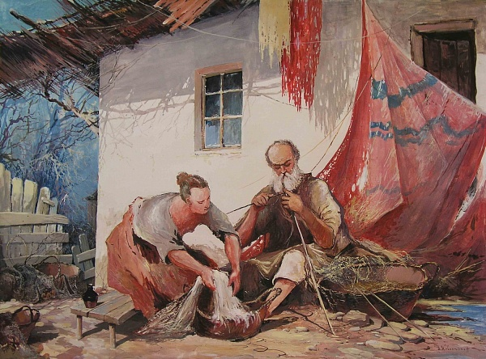
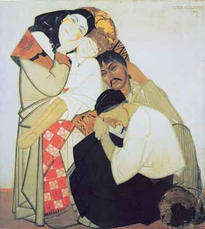
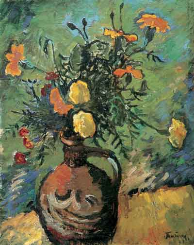
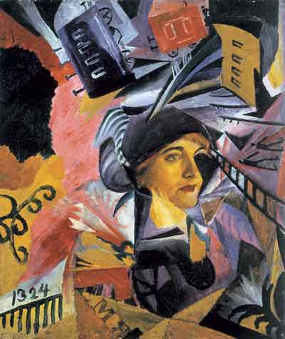
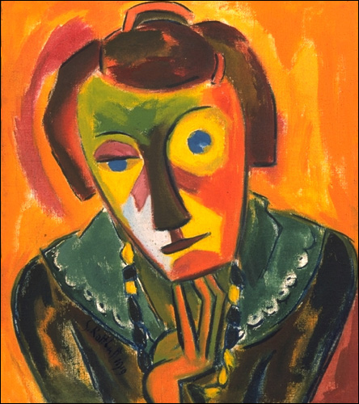
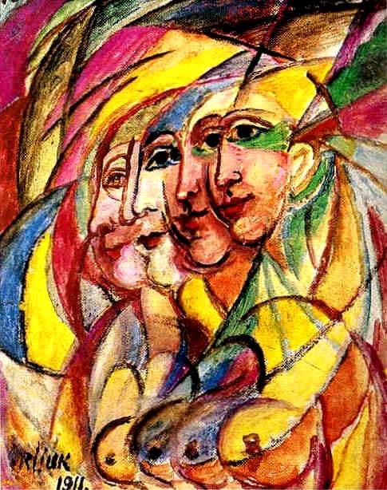
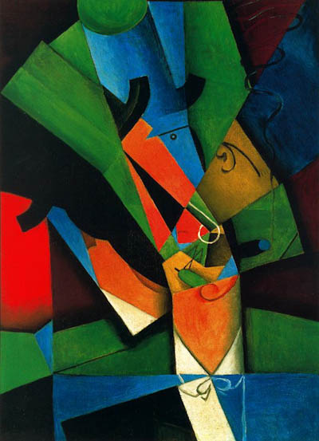

Модернізм
Мистецтво модернізму стало своєрідною опозицією технократичному мисленню та сцієнтизму.
Спроба вийти за межі раціональної діяльності сприяла абсолютизації спонтанного, інтуїтивного діалогу людини і світу. В рамках цієї тенденції стверджувалось світосприйняття, засноване на емпатії - здатності людини до глибокого співчуття, осягненню буття через інтенсивне емоційне прозріння.
Митці, щоб привернути до себе увагу, постійно мали бути оригінальними, винахідливими, збагачуючи арсенал своїх образотворчих прийомів.
Одні напрямки модернізму абсолютизували об'єктивний зміст образу (натуралізм), його формальну сторону (формалізм), інші - психологічні витоки ("потік свідомості"), емоційну насиченість (експресіонізм).
Основна риса модернізму - метафорична побудова образу за принципом асоціативності, вільної відповідності виразних форм настроям і переживанням. Іншими словами, люди мистецтва XX ст. свідомо відмовилися наслідувати реальному світу, а почали створювати свій штучний світ, що живе за законами їх фантазії та інтелекту.
Відмовляючись від традицій у мистецтві і вважаючи формальний експеримент основою свого творчого методу модерністи розвивали мистецтво під знаком знищення образності на користь абстракції, алегоричності, деформації та примітивізму.
| Федір Кричевский | Володимир Татлін | Давид Бурлюк |
|  |  |  |
Створення нової реальності мистецтвом визнавалось на рівні маніфестів різних модерністських течій.
В цілому численні течії модернізму: кубізм, фовізм, неоімпресіонізм, експресіонізм, символізм, футуризм, імажинізм, конструктивізм, поп-арт, примітивізм та інші - відійшли від традиції зовнішньої схожості при зображенні життя.
Першим художнім напрямком, у якому реалізувалися основні положення естетики початку XX ст. вважають фовізм. Картини таких художників відрізнялися незвичайно яскравими кольорами, що поглинали природні обриси предметів, а також навмисно грубим викривленням форм. Це і дало підставу представників цього напрямку назвати дикунами. Фовізм відзначався емоційною спрямованістю у художньому відображенні світу, стихійністю ритму та інтенсивністю кольору. Він став першим поштовхом до розвитку нереалістичного мистецтва.
На початку ХХ століття в Італії і Франції сформувався такий напрямок мистецтва як футуризм (від лат. futurum - майбутнє), який теж проголосив свою опозиційність реалістичним течіям. Перший Маніфест футуризму був опублікований у 1909 році у Парижі італійським поетом Ф. Марінетті.
До Першої світової війни футуризм в індустріально відсталій Україні не мав сприятливого ґрунту. Але трохи згодом він почав стрімко розвиватись.
Футуризм намагався знайти і ввести у художню практику нові форми для відображення прискореного темпу життя та процесу індустріалізації суспільства, які, на їх думку, були ознаками нової доби.
Покладаючи реальні надії на можливості техніки, футуристи вважали, що традиційну культуру слід подолати шляхом технізації, урбанізації та наукових досягнень. На творчість митця-футуриста автомобіль, потяг, літак впливали більше, ніж шедеври античного мистецтва, природа і почуття.
Формою існування культури XX ст. футуристи вважали рух, що втілювався як в мобільності нових засобів зв'язку, динаміці нових машин і механізмів, так і в бунтарстві мас, соціальних конфліктах.
Цей абсолютний рух вони прагнули виразити засобами мистецтва, зокрема - шляхом накладення його послідовних фаз на одне зображення. Виникав ефект "змазаного" кадру, наприклад, собаки з двадцатьма ногами. Фактично футуристи намагалися зображувати не самі предмети, а їх енергетичні лінії.
У соціально-політичному плані футуристи вважали "санітарами культури" революції та війни. Тому футуризм можна вважати не лише напрямком образотворчого мистецтва, а й активною суспільно-політичною течією.
У Росії войовничий нігілізм футуристів виявився співзвучним ідеології пролетарської революції, анархізму.
Одним із найбільш самобутніх напрямків мистецтва XX століття вважається кубізм. Складність реальності і людини кубісти намагалися представити в простих геометричних формах та їх просторових сполученнях (куби, трикутники тощо), що привело до деформації предметів, розщеплення об'єктів на геометричні об'єми. Ознаками кубізму можна вважати: геометризацію ліній та форм, деформацію, площинність зображення, асиметрію.
Для творчості кубістів характерними є відмова від бажання зображувати речі такими, якими вони постають перед нашим зором; спроба будувати картину із окремих першоформ; не імітація зовнішності, а створення конструкції; позбавлення залежності живопису від зору, що породжує лише ілюзію та обман.
Для кубістів форма завжди була пріоритетною по відношенню до сюжету. Кубістичний принцип відображення привів мистецтво Проголосивши відмову від зображення життя, цей напрямок модернізму ознаменував завершення мистецтва в його класичному розумінні.
Щоб збагнути діалектику стосунків між усіма модернізмами, а також їхню роль у кожному окремому періоді і в українській культурі в цілому, слід виробити підхід до модернізму не як до набору стильових, формальних або жанрових принципів, а як до певної мистецької філософії. В суті поняття "модернізм" закладено розуміння модерності й естетичне ставлення до неї.
На загальну думку дослідників, "Модерність охоплює певні інтелектуальні рухи, політичні напрями й соціоекономічні тенденції та передбачає постановку оптимістичних соціальних цілей."
Український модернізм по праву зайняв особливе місце в світовому мистецтві, незважаючи на драматичні долі і тернистий шлях його послідовників в Україні і поза її межами.
Вгору